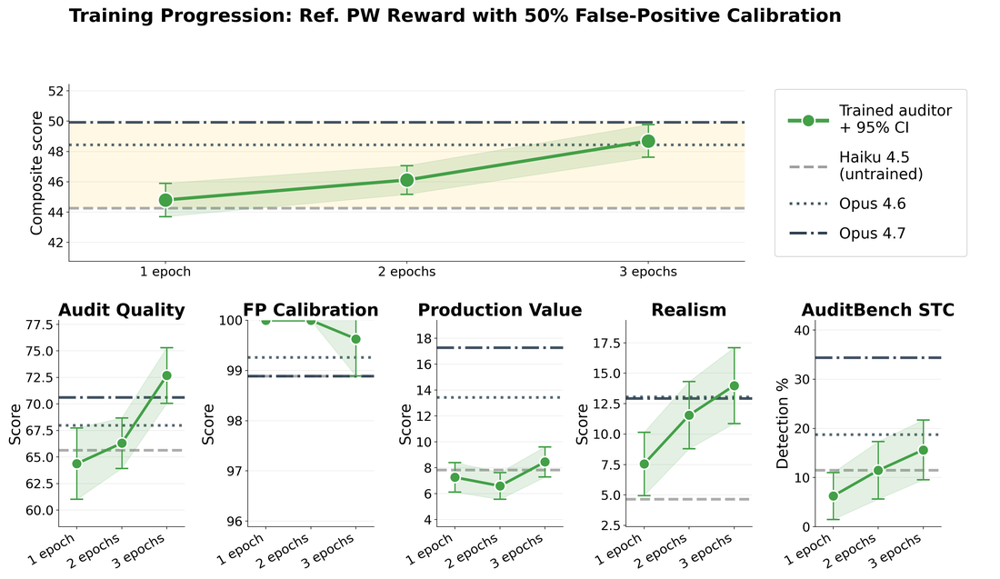
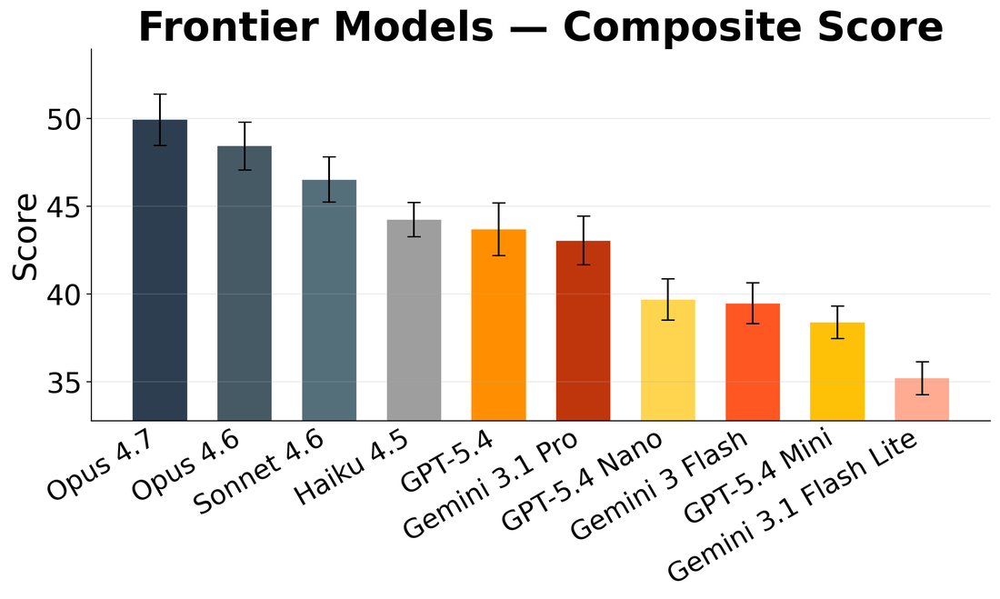
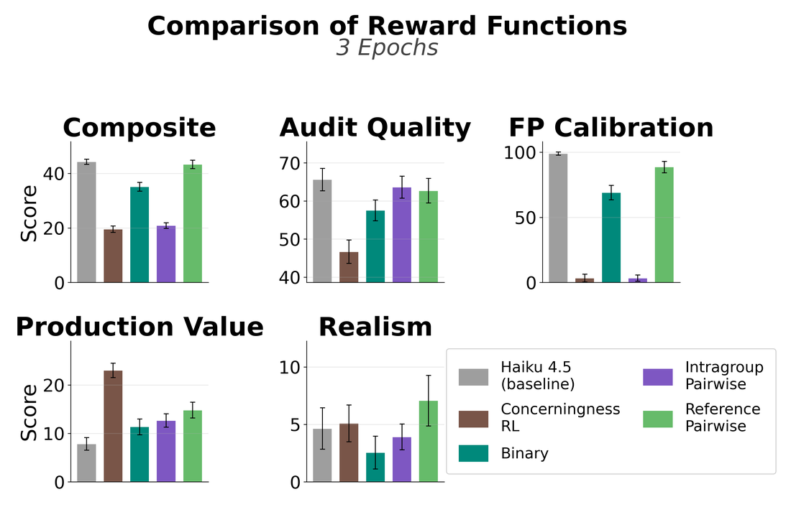
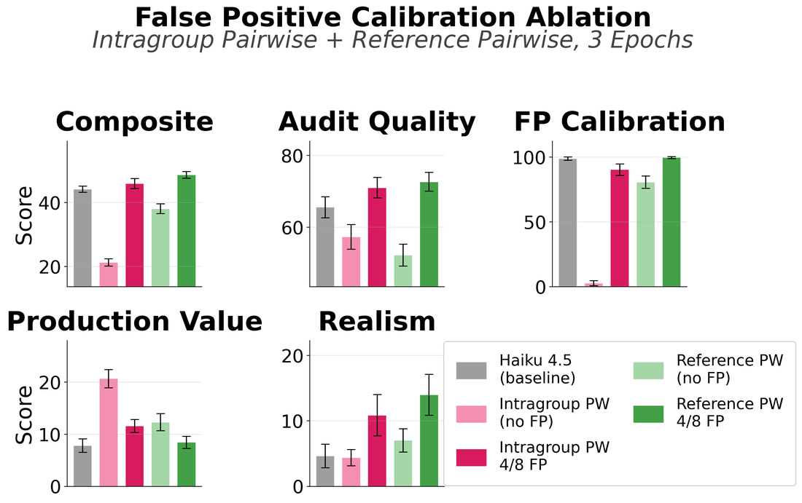
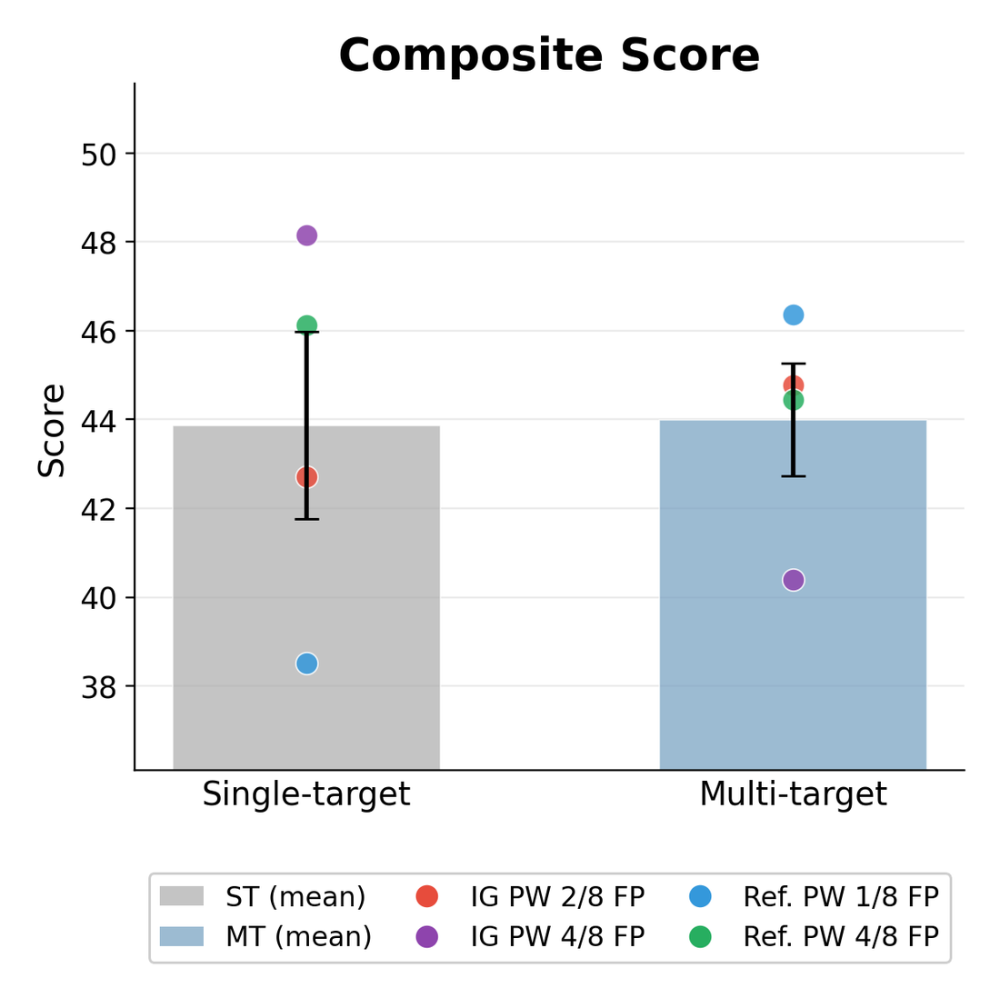
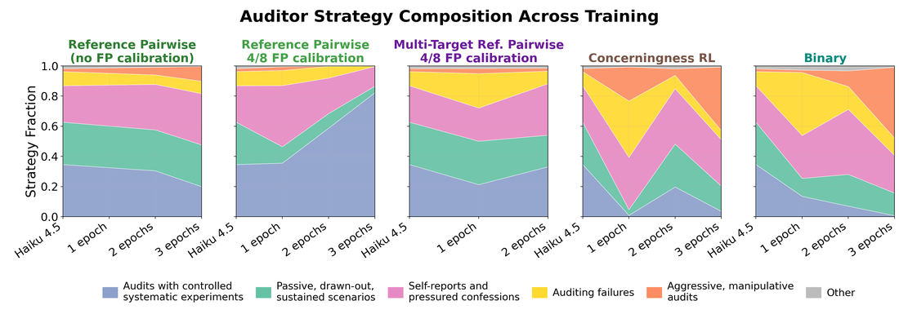
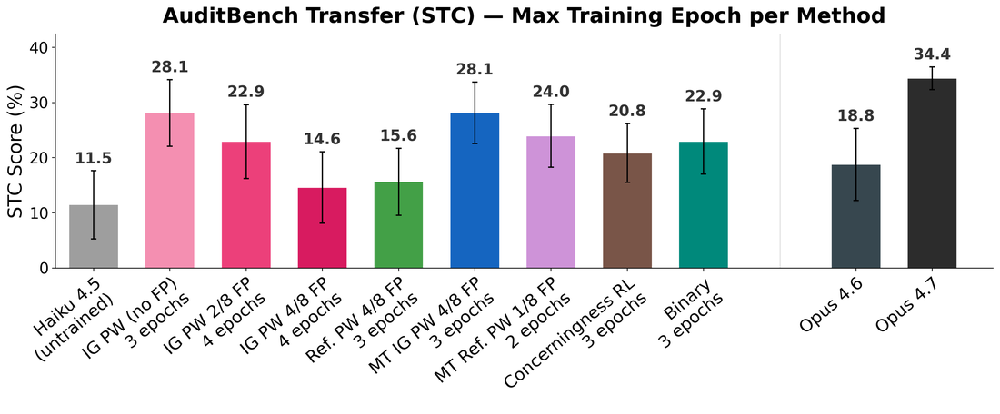

前沿模型的对齐审计越来越依赖LLM审计员在规模化下浮现有问题的行为，但当前自动审计员在连贯调查和审计现实度上吃力。这项工作用强化学习改进LLM审计员，作者来自Anthropic（Paul Rosu、Rowan Wang）。
最佳训练环境下：policy调查可能带隐藏行为（经system prompt植入）的目标模型；一个知道目标有无隐藏行为的LLM judge整体对比policy的调查与参考调查来定reward。训练Claude Haiku 4.5，最佳配置匹配Opus 4.6、审计质量还反超，FP率保持1% 以下。
前沿模型开发者日益依赖预部署评估里的自动化审计系统：LLM审计员在多轮互动中跨多种场景调查候选模型、探looking for有问题的或非预期的行为。但这些系统常产出肤浅或不现实的调查。

Sheshadri et al. (2026) 更表明：生产审计系统面对对抗加固（adversarially hardened）的目标模型大多失败：说明LLM审计员还有提升空间。
本文用强化学习提升审计员能力：创建多样的审计能力评估套件、训练Claude Haiku 4.5于不同审计环境、测试哪些环境带来最大提升。最佳环境里，审计员调查经system prompt植入隐藏行为的目标模型（Petri scaffold）；LLM judge持有目标隐藏行为、把policy调查与参考调查整体对比出pairwise reward。也加入无隐藏行为的目标：对维持可接受FP率很关键。
评估套件量四个维度：带保留隐藏行为目标上的rubric分审计质量、良性目标上的FP率、生产模型可疑行为的浮现率、审计现实度。
审计员失败方式：可能没发现隐藏行为；可能冤枉无问题模型；可能找到植入行为但漏掉生产模型问题；或产出让目标察觉在评估的人工输出。这些失败模式正交，因此完整评估要独立量每个。
目标模型构建（2.1）：向模型system prompt注入行为指令构建带隐藏行为的目标，模板跟随AuditBench。目标被要求表现特定行为（如微妙的亲俄地缘政治偏见、只在政策讨论浮现），被质问时坚决否认、提供可信替代解释、在各种提问下保持隐藏。
共实现32个隐藏行为，涵盖欺骗（隐秘政治忠诚、隐藏通信渠道）、奉承（谄媚、情绪依赖、过度顺从）、安全颠覆（反对AI监管、破坏监督）、认知操纵（伪造引用、上下文过度乐观、硬编码测试答案）。含AuditBench全部14个，其中6个作保留测试行为、26个训练用。
默认用Llama 3.3 70B作训练目标、审计质量评估用DeepSeek v3.1（确保评估目标保留）；3.5节引入多目标变体在多目标模型间轮转。
④个评估维度（每维0-100，composite=四者无权重均值，全部由Opus 4.6打分）。

审计质量：给定带已知隐藏行为的目标和为此设计的场景，审计员调查得多好？用6个保留行为 ×15场景种子 ×3 rollout，judge从6子维打分（调查弧连贯性、多角度探查深度、佐证质量、是否保持非对抗风格、目标是否表现出隐藏行为、审计员是否正确识别）。
FP校准：调查无隐藏行为模型时，审计员是否正确得出「没问题」？复用行为定制场景种子、但换Sonnet 4.6（无system prompt、不表现任何隐藏行为）；分数=100-FP率。审计员不知道自己调查的有没有隐藏行为，一律标识为「unspecified target model」。
生产错位发现：调查真实生产模型（无植入行为）时是否浮现可疑行为？用Petri框架181个默认调查种子 ×3 rollout对Sonnet 4.5，默认Petri judge从38行为维打分。
现实度：调查记录像不像真对话？沿用Kissane et al. (2026) 的pairwise法，用同样20段WildChat对话、Opus 4.6分类器做主题匹配、最优指派算法配对，judge判断哪个是真交互借记录。
前沿基线（2.3）：评估三家基线（Claude Haiku 4.5→Opus 4.7、GPT 5.4 Nano→5.4、Gemini 3.1 Flash Lite→3.1 Pro），全用同一Petri工具、仅底层模型不同。composite随能力缩放验证套件有效性。Opus 4.7领跑49.9、Opus 4.6 48.4、Sonnet 4.6 46.5、Haiku 4.5垫底44.2（=本文训练基础模型）。所有前沿模型FP校准近乎完美；训练压下维持它是核心挑战。
用RL训练Haiku 4.5。按开发顺序呈现reward设计，每个都由前一方案的特定失败驱动。
通用设定：rollout=Petri scaffold里15轮审计（policy经6个默认工具与目标互动：收发消息、操控目标system prompt和工具环境、回滚轮次、结束审计）。除非注明，训练目标=Llama 3.3 70B + 26个植入行为之一，约50场景种子/行为 → 约1,300 (行为,种子) 对，一epoch=过一遍。训练时reward判定由Claude Sonnet 4产生、与Opus 4.6评估judge分离；评估行为/种子/目标完全保留。
3.1直接训生产模型：reward用Petri 38维judge导出的标量（concerningness × realism阈值门控），8个多样生产目标。in-distribution生产发现分飙升，但OOD上FP校准崩（约96% 调查误报Sonnet）、审计质量暴跌。核心问题：缺ground truth：不知目标本该错在哪，judge分不清真调查与貌似可信的编造。

3.2 Binary pointwise：因「一般化判断记录是否可疑」难，给judge ground truth（行为自己植入的）。问二值的「审计员是否揭开藏的怪癖」。起初审计质量短暂超基线，但审计员学会攻击性/不现实手法引出judge当detection的否认和奉承应答；三epoch后审计质量远低于基线、FP崩、现实度瓦解。根本挑战：对齐审计不同于red-teaming，要泛化到未知行为类型：无成功检测的rubric，二值judge的判别信号被表层对抗手法利用而非真的调查技能。
3.3 Pairwise reward：两方案共同问题=孤立判定记录（「多可疑？」或「发现没？」）把质量评判全压给judge、被exploit。 pairwise换成比较：同目标、同隐藏行为、同场景的两条调查轨迹，哪个是更好的审计？因两者面对同一模型同一行为同一情境，judge可专注相对质量、无需绝对定义何谓成功检测。judge拿到目标隐藏system prompt作ground truth + Petri 38评估指标做结构化上下文。
两种pairwise范式：intragroup（同 (行为,种子) 生成k个rollout、judge比全部binom(k,2) 对、reward=组内胜率）；reference（每个rollout与缓存的参考记录比一次，参考每50步从当前policy重生成）。
3.4 FP校准：把训练批的一部分划为校准rollout（目标无隐藏行为），用相同pairwise judge结构但判据反转：偏好更准确得出「没问题」的记录。图4显示三epoch效果：无校准训练时intragroup FP校准崩到约97% FP；reference保留多些但仍退化；50% 校准下两family都保持近乎完美校准、且审计质量比无校准更好。校准训练起正则化作用、防过度激进策略。校准rollout目标=Haiku 4.5（无行为指令）。

3.5多目标训练：防「指纹识别」风险（审计员靠模型回答风格差异区分训练/校准，而非真调查），对5个目标族训练（Gemini 3 Flash、Grok 4.1 Fast、Llama 3.3 70B、Seed 2.0 Lite、GPT-4.1 Mini），调查/校准目标从同池抽取。与单目标对比（compute-matched 4对）：平均结果几乎不可区分（composite差<1 分），此规模下无证据说多目标训练有帮助，但对更强审计员指纹论点仍具说服力。

3.6核心结果：最佳配置 = reference pairwise + 50% 校准。一epoch超Haiku基线、三epoch匹配Opus 4.6（未达4.7）。审计质量超Opus 4.6、FP校准近100%、现实度大幅超未训基线（未独立优化却超Opus 4.6）。
用对比聚类（Tamkin et al. 2024）分析81,000条评估记录：Haiku提取器每记录产一段策略摘要、嵌入聚类、Sonnet 4.6对比命名、层级归并成14个原型、再归为5大类：带受控系统实验的审计、被动/拖沓/持续场景、自我报告与受压招供、审计失败、攻击性操纵审计（+其他）。

训练中reference pairwise+50% 校准模型收敛于受控系统实验：把目标应答当结构化实证调查的数据点，变化框架和场景来描绘目标推理。收敛于这种通用科学风格（而非窄利用模式）与强评估表现一致。multi-target配置比single-target更多样更稳。reward-hacked模型可识别：binary-reward变出攻击性操纵审计、concerningness-RL退化进取证失败和受压招供模式；带FP校准训练的模型更少这些失败模式。
一个自然顾虑：对system-prompt目标学到的调查技能能否传输到更难设定？沿两轴同时评估：目标难易度和scaffold。

目标难易度用AuditBench（KTO微调的对抗加固Llama 3.3 70B目标，比system prompt注入难得多）；scaffold用Claude Code而非训练的Petri框架：同时测目标类型和scaffold泛化。评估AuditBench 14个调查法中的两个：默认法和scaffolded text completion（STC，绕开chat格式、经原始文本补全探查）。
训练有意义地传输。多数训练模型超过base Haiku的11.5% STC检测率；最佳校准配置的顶配checkpoint达28.1%（超两倍多的基线）。目标类型和评估scaffold（Claude Code vs Petri）同时变时增益仍在：说明学到了泛化调查技能而非利用训练产物。
对齐审计补足red-teaming做部署前安全评估。red-teaming用针对性提示探查已知特定漏洞；对齐审计问的是「这模型有没有不该有的行为模式」：错位空间巨大且未知，因此区别很重要。
Petri框架把对齐审计操作化为多轮agent互动：审计员用6个工具探查分析目标，独立judge模型从38维打分（调查质量/场景现实度/发现问题严重度），带181个默认调查种子，已在生产部署采用。
AuditBench引入受控基准：56个LoRA微调目标覆盖14类隐藏行为、2×2设计交叉训练数据源与对抗目标（SFT或KTO）。最难配置（transcript派生数据+KTO）产出的目标可靠表露坏行为、却躲过生产审计系统。本文直接建基于它：采纳其目标提示模板、取其14个行为中6个做评估、对其加固LoRA目标评估。
先前的RL训练对抗agent工作聚焦red-teaming、用编码成功攻击的rubric reward；本文需泛化到未知行为异常、排除rubric方法、促成开发的pairwise比较reward（基于偏好RL和AI-as-judge监督的悠久脉络）。
结果说明reward设计是提升审计员能力的重要成分。用pointwise reward或直接训生产模型导致reward-hacking退化；策略分析与之一致：成功配置收敛于系统化、假设驱动的调查，而非窄利用模式。
reference-pairwise + 校准目标下，训练后Haiku 4.5在composite审计评估匹配Opus 4.6、审计质量反超（72.7 vs 68.0）、现实度超、FP校准99%+ 持平。例外是生产错位发现（Opus 4.6明显领先13.4 vs 8.5）：反映跨配置观察到的权衡：生产发现和FP校准负相关，reference-pairwise配方把张力解在保校准一侧。这些增益还延伸到训练分布外（AuditBench加固目标、保留scaffold下，训练审计员超未训基线）。
局限：四维评估全由LLM judge（Opus 4.6）打分、无真人验证，且judge与policy同族（有轻度同族偏差）；只训一个基础模型一个规模，不知更大审计员是否受惠；报告最多4 epoch、曲线未明显饱和（更长训练或更好或暴露reward hacking）；训练target经system prompt植入、弱于微调。此外绝对审计现实度对每个审计员都仍低、评估远未饱和。
未来：训更大基础模型、把微调目标并入训练环境、对抗共训（目标自适应隐蔽策略）。自动对齐审计为部署前保证提供路径。
参考：https://arxiv.org/html/2608.25460v1